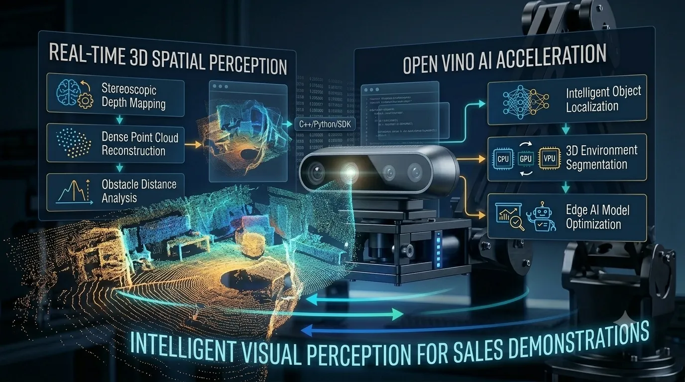
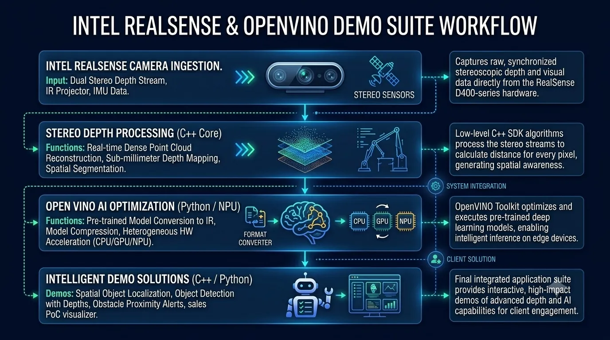
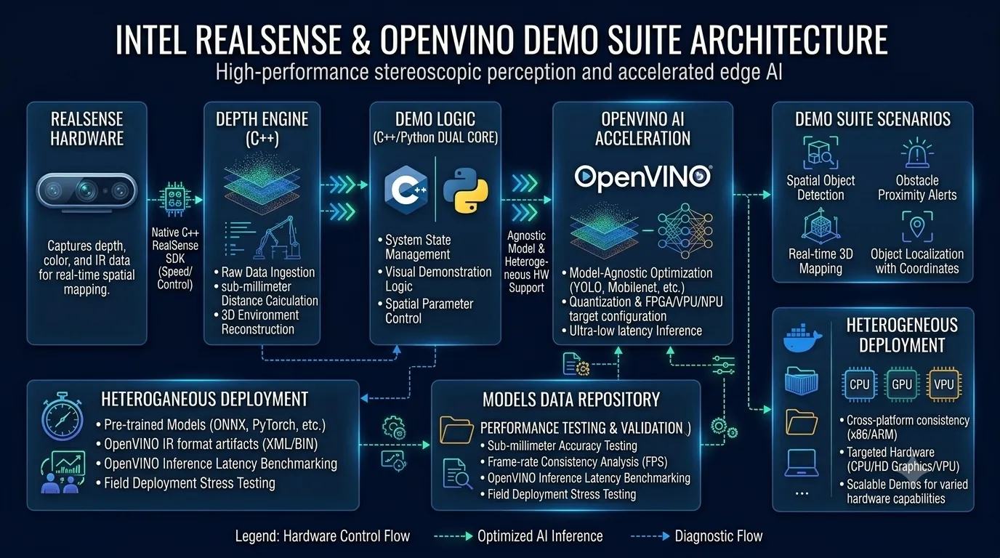
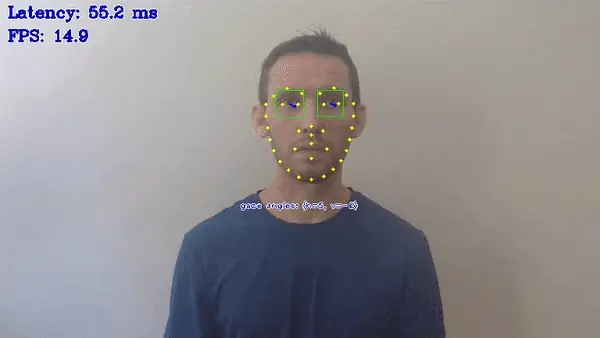
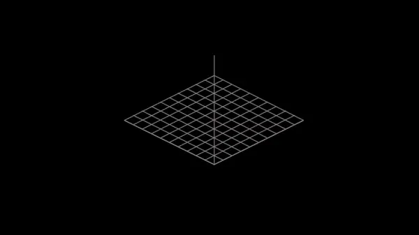
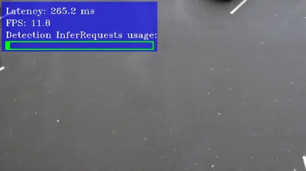

RealSense AI Suite is an interactive software ecosystem developed to showcase the capabilities of stereoscopic depth-sensing technology to prospective enterprise clients. Built using C++ and Python, the platform integrates Intel OpenVINO to execute highly optimized, real-time AI models alongside native RealSense SDK algorithms. The suite delivers high-impact, visual demonstrations of 3D spatial mapping, obstacle distance tracking, and object localization directly from raw stereoscopic data.

Integrated Intel OpenVINO to run optimized deep learning models locally, achieving ultra-low latency without GPU dependency.
Engineered robust pipelines to process raw stereoscopic data into dense point clouds and sub-millimeter depth mapping.
Created high-impact interactive demos that successfully translated complex spatial technologies into clear commercial value for enterprise clients.
Combined C++ for high-speed hardware control with Python for flexible and rapid deployment of artificial intelligence algorithms.
The RealSense AI Suite was engineered as a high-performance sales enablement tool designed to translate complex computer vision capabilities into tangible, visually striking solutions for prospective clients. By developing custom proof-of-concept (PoC) software, I demonstrated how stereoscopic depth sensors could be utilized to solve real-world industrial and commercial automation challenges.
The application relies on a dual-core programming structure, combining the raw speed of C++ for low-level sensor configuration and point cloud processing, with the flexibility of Python for rapid AI prototyping. Utilizing the native Intel RealSense SDK, I implemented algorithms to reconstruct dense 3D point clouds in real-time, compute sub-millimeter distance measurements, and segment spatial environments based on depth thresholds.
To power the cognitive layer of the system, I integrated the Intel OpenVINO Toolkit. This allowed us to run pre-trained, state-of-the-art deep learning models—such as object detectors and spatial segmentors—optimized specifically for Intel's hardware architecture. By converting models to the OpenVINO Intermediate Representation (IR), we achieved ultra-low latency inference directly on edge devices, showing clients that intelligent depth perception does not require expensive, power-hungry GPUs.
Through this integration of advanced stereoscopic hardware and accelerated machine learning, the demo suite successfully bridged the gap between raw spatial data and actionable intelligent insights, helping clients envision and deploy next-generation robotics and vision applications.

Conceptual workflow illustrating
High-performance 3D point cloud reconstruction and spatial distance calculations.
Model conversion, quantization, and accelerated heterogeneous inference on edge hardware.
Rapid development of custom proof-of-concept demos and system integrations.
Interactive sales visualizers showcasing live 3D coordinate overlays and distance alerts.

High-level architecture showing the interaction between the RealSense SDK, OpenVINO inference engine, and the demonstration layer.
RealSense AI Suite was designed using a modular architecture that separates hardware-level stereoscopic ingestion, core spatial coordinate processing, edge AI model optimization, and interactive demonstration layers.
Each raw video and depth frame captured by the RealSense camera is processed immediately by high-performance C++ algorithms to calculate exact distances and spatial mapping. Simultaneously, the optimized deep learning models run locally via Intel OpenVINO, matching detected visual entities with their exact 3D physical coordinates in real time. This pipeline design ensures maximum frame rate rendering and sub-millimeter precision without relying on GPU hardware dependencies.
By decoupling the raw sensor communication, the geometric distance calculations, and the artificial intelligence runtime, the platform remains highly scalable, hardware-agile across various Intel processing units, and modular enough to easily swap out custom deep learning models depending on specific client demands.
Screenshots showcasing the RealSense AI Suite's interactive interface, real-time 3D point cloud visualization, and OpenVINO-powered object detection capabilities.

Real-time gaze estimation using Intel RealSense camera.

Real-time human pose estimation using Intel RealSense camera.

Real-time object detection using Intel RealSense camera and OpenVINO.